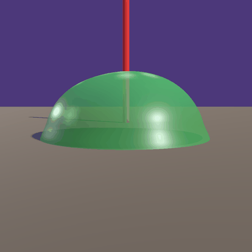
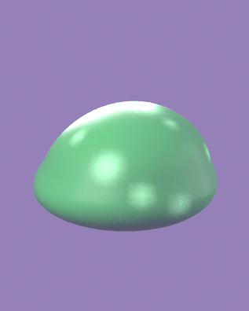
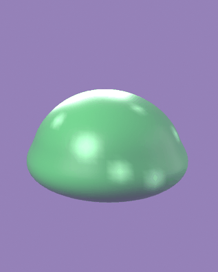

Lo que pediste: el gel se derrama hacia donde va
Barrido de la inclinación de -0.8 a +0.8 y de vuelta, con la
cámara fija de costado. El slime mira hacia la izquierda del cuadro, así que
cuando la masa se corre a la izquierda está avanzando. Lo único que cambia entre frames
es la deformación — nada de cámara ni de luz.

lean_x, lean_y) con pesos con signo cubren
las cuatro direcciones. Los maneja slime.gd desde la velocidad real, no
un clip, porque depende de una variable de gameplay. Tiene retraso viscoso a
propósito: el gel llega tarde a su forma y sobrepasa al frenar.
| Qué | Valor |
|---|---|
| Velocidad a la que satura | 3.2 m/s (el slime llega a 3.0 saltando) |
| Inclinación máxima | 0.8 — más arriba se ve tumbado, no derramado |
| Respuesta del gel | 6.5 — el retraso ES el efecto |
| Test end-to-end | velocidad (0, 0, −3.0) → lean_y = 0.674, lean_x = 0.000 |
Set de animación completo
Los cinco clips del contrato. Ahora ninguno mueve el cuerpo: sólo deforman. El
desplazamiento es de la física — hop traía un canal de traslación que se
sumaba al salto real y hacía saltar al slime casi el doble, despegándolo de su hitbox.


Estado
- El color llega a Godot. Vive en vertex color FLOAT_COLOR. Antes el GLB salía blanco.
- Sin cuencas, como pediste. El código de cara quedó como
--facepara el Rey Slime. - Burbujas visibles: 6.6% de los vértices tintados (antes 1.7%). Leen como manchas de luz interna.
- Deformación direccional andando y verificada de punta a punta.
- Falta referencia visual del anime. No pude bajar frames de Tensura — construí desde los principios de squash & stretch y la descripción de la wiki. Si subís 2-3 capturas, ajusto contra ellas.
- Las burbujas no tienen borde. El vertex color no puede: interpola entre vértices. Para burbujas con contorno hay que pasar a textura bakeada, que es un nivel por encima del actual.
- El timing del salto no cuadra:
hop_intervales 1.6 s y el clip dura 1.96 s, así que se corta antes de asentarse. Se ve jugando, no en un GIF. - King Slime sigue en la versión vieja — llega blanco. Es lo siguiente.
Dónde está todo
| Qué | Dónde |
|---|---|
| Generador | game/tools/blender/slime/build_slime.py |
| Asset en juego | game/assets/art/piso1_pradera/enemies/slime/slime_dp_01.glb |
| Lógica de inclinación | game/scenes/enemy/slime.gd |
| Captura en Godot | game/scenes/dev/mob_capture.tscn |
| Hojas de contacto | game/tools/godot/mob_capture/ |
| Niveles del motor | game/docs/art/_motor_tiers.md |
| Referencia de movimiento | game/docs/art/_references/slime_tensura/motion/_motion.md |